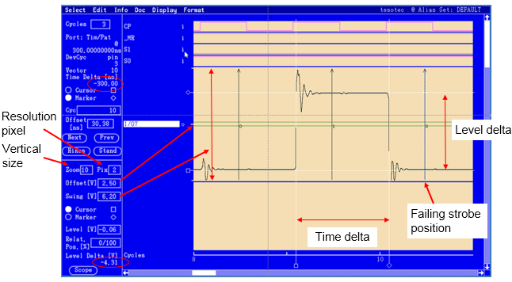
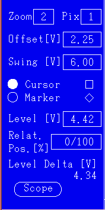
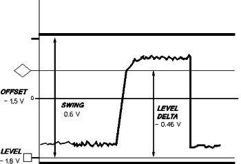

Softscope function of the Timing Diagram
The softscope function of the Timing Diagram allows you to get much finer resolution (up to 10 mV) of your received data, in the y-axis; it is like viewing the waveforms coming from your device with an oscilloscope (hence the original name!).
When you view something with the softscope function, the software performs many functional tests in order to build up the scope screen. At each sampling point on the time axis, several functional tests are performed, each with a different level threshold.
As the functionality of the softscope is very similar to the high resolution timing diagram you can:
- Perform a "One-Shot" scope screen which captures only the cycles in the display.
- Scroll through your test examining more cycles than can fit in your display at once (Switching to scope screen to view several cycles).

The softscope control area
When you activate the softscope function, an additional control area appears at the bottom left of the window. The information contained in this area refers to only one channel. The output pin name of this channel is highlighted in the channel selection area of the Timing Diagram. To highlight a particular pin name, move the cursor over it, and click the left mouse button.
 |
The following control elements are available:
|
The diagram below shows waveform related parameters of the softscope control area.

Functional changes
- Introduced before SmarTest 6.3.2